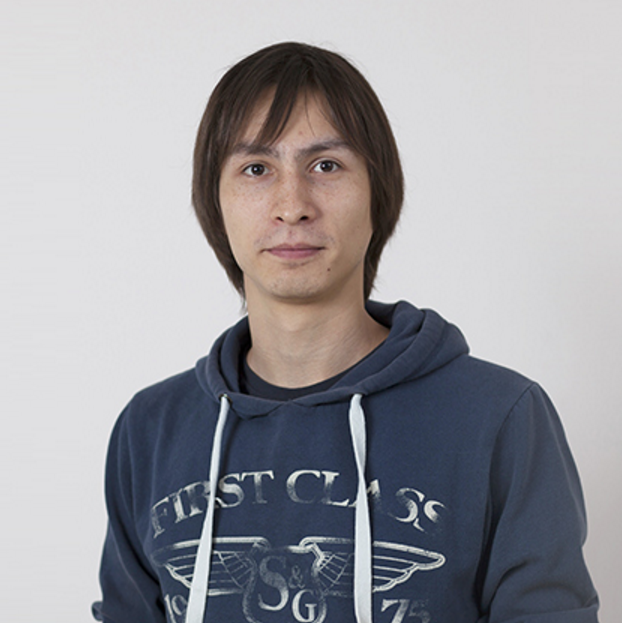
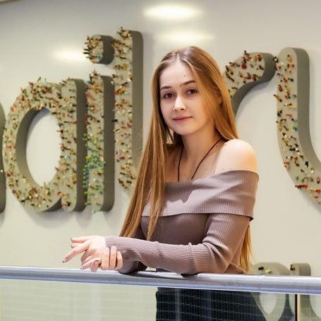

<!DOCTYPE html>
<html lang="en"></html>
<head>
  <meta charset="UTF-8"/>
  <title>Main page</title>
  <link href="assets/css/index.css" rel="stylesheet"/>
</head>
<body>
  <div class="wrapper">
    <div class="left__block"> 
      <div class="left__block-header">Открытый вебинар</div>
      <div class="left__block-wrap">
        <div class="left__block-form_title">Зарегистрироваться на вебинар</div>
        <div class="left__block-form_desc">
          <p class="left__block-form_desc-item"><sup>*</sup>Обязательно подтвердите email на почте</p>
          <p class="left__block-form_desc-item"><sup>*</sup>Количество мест ограничено</p>
        </div>
        <form method="POST" action="http://cp.unisender.com/ru/subscribe?hash=5gak6ycfo943mbeo3q4qr78upmcmswtxhzcyenhkcbp6quk1894oo" name="subscribtion_form" target="_blank" class="left__block-form">
          <input type="text" name="f_5391861" placeholder="Имя" class="form__name form-item"/>
          <input type="text" name="f_5391865" placeholder="Фамилия" class="form__surname form-item"/>
          <input type="email" name="email" placeholder="Е-mail" class="form__email form-item"/>
          <button type="submit" class="form__submit">Зарегистрироваться!</button>
          <input type="hidden" name="charset" value="UTF-8"/>
          <input type="hidden" name="default_list_id" value="8412415"/>
          <input type="hidden" name="overwrite" value="2"/>
          <input type="hidden" name="is_v5" value="1"/>
        </form>
      </div>
      <div class="left__block-footer">
        <ul class="footer__socials">
          <li class="footer__socials"><a href="https://vk.com/event134409801" target="_blank" class="footer__social-link"><span class="fa">&#xf189;</span></a></li>
        </ul>
      </div>
    </div>
    <div class="container">
      <div class="right__block">
        <div class="right__block-title"> 
          <p>Работа в крупной IT-компании,</p>
          <p>или </p>
          <p>Что требуется от Frontend-разработчика, чтобы на нее устроиться?</p>
        </div>
        <div class="right__block-text"><b class="right__block-text_bold">18 декабря в 16.00</b> с вами <b class="right__block-text_bold">бесплатно</b> поделятся реальным опытом люди, которые уже получили ответ на этот вопрос – <b class="right__block-text_bold">разработчик "ВКонтакте" Тимофей Чаптыков</b> и <b class="right__block-text_bold">разработчик Mail.ru Дарья Пушкарская</b>.</div>
        <div class="right__block-text"> 
          <div class="text-head">Зарегистрируйся в форме слева на открытый вебинар и вы узнаете:</div>
          <ol class="right__block-text-list">
            <li class="right__block-text-item">какими технологиями нужно владеть в обязательном порядке</li>
            <li class="right__block-text-item">как составить резюме, чтобы повысить свои шансы на трудоустройство</li>
            <li class="right__block-text-item">какие работы представить в портфолио</li>
            <li class="right__block-text-item">как подготовиться к собеседованию и пройти его</li>
          </ol>
        </div>
        <div class="right__block-speakers">
          <div class="right__block-speakers-title">Ведущие вебинара:</div>
          <div class="speakers">
            <div class="speaker">
              <div class="wrap-imga">
                <div class="img-wrap"></div><a href="https://vk.com/tim.chaptykov" target="_blank"><span class="fa">&#xf189;</span></a>
              </div>
              <p class="speaker-title">Тимофей Чаптыков</p>
              <p class="speaker-description"><b>Ранее:</b> победитель Всероссийских Дельфийских игр в номинации "Веб-дизайн",  сооснователь красноярского коворкинг-кафе "Фургон", работал в digital-агентстве SmartHeart и компании 2ГИС.</p>
              <p class="speaker-description"><b>В настоящее время:</b> разработчик "ВКонтакте".</p>
            </div>
            <div class="speaker">
              <div class="wrap-imga">
                <div class="img-wrap"></div><a href="https://vk.com/d_pushkarskaya" target="_blank"><span class="fa">&#xf189;</span></a>
              </div>
              <p class="speaker-title">Дарья Пушкарская</p>
              <p class="speaker-description"><b>Ранее:</b> работала разработчиком интерфейсов в компании 2ГИС, а также преподавателем и наставником в школе LoftSchool.</p>
              <p class="speaker-description"><b>В настоящее время:</b> программист Mail.ru.</p>
            </div>
          </div>
        </div>
        <div class="right__block-text-wrap">
          <div class="right__block-desc"> 
            <div class="right__block-desc-title">Для успешного трудоустройства, особенно в сфере IT, мало просто обладать высокой квалификацией </div>
            <p>Часто бывает так, что даже суперспециалист не может подыскать себе хорошую работу, а компании, которым так необходим именно такой сотрудник, не могут его отыскать. Это происходит потому, что далеко не все профессионалы умеют правильно себя позиционировать и продавать.</p>
          </div>
          <div class="right__block-desc"> 
            <div class="right__block-desc-title">На вебинаре о своем опыте расскажут люди, которые самостоятельно прошли весь путь с самого начала</div>
            <p>Если вам не хватает компетенций, и вы тонете в море представленной в интернете информации, они расскажут, как ускорить свое обучение и выйти на конкурентный уровень. Если у вас в портфолио уже достаточно крутых проектов, но вам до сих пор не повезло с трудоустройством, вы узнаете о том, как правильно составить резюме и максимизировать свои шансы. Наконец, вы сможете задать свои вопросы и гарантированно получить ответы на них!</p>
          </div>
        </div>
      </div>
    </div>
  </div>
</body>